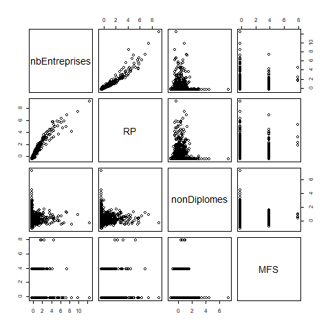

Mutivariées base (analyse factorielle)
1 Attention définition !
On parle ici d’analyse factorielle. Il ne s’agit pas de facteur explicatif mais de synthèse, de description.
2 La donnée
Il s’agit d’émettre une hypothèse, mais aussi de rendre les variables comparables entre elles.
2.1 Recherche
Comparaison donnée RPLS et insee à la base communes avec un outil très intuitif
https://statistiques-locales.insee.fr
2.1.1 Exploration autour de l’outil
Chercher à construire un tableau au niveau des communes avec

Quels sont les outils de l’interface à utiliser ?
2.2 Hypothèse multivariée
2.2.1 La première
Formuler une hypothèse avec les 4 variables sélectionnées.
Par exemple, nous allons voir si le nombre d’entreprises a un lien avec - le nombre de résidences principales (recrutement local) - la part des non diplomes (les non diplomés vont sur un emploi proche) - et l’implantation des maisons france service (les maisons france service permettent le développement de l’emploi local)
(exercice moodle)
2.2.2 Autour du logement social
Partir d’une hypothèse fictive autour du logement social. On a vu par exemple que
- l’année de construction ne permettait pas d’expliquer la surface habitable, ou que
- souvent les ménages les plus modestes n’obtenaient pas les grands appartements.
Quelles peuvent être les autres facteurs pour ces deux états de fait ?
Constituer le tableau à partir de l’outil.
L’ouvrir sous Libre office afin de simplifier les noms de colonne et de vérifier un peu.
data <- read.csv("data/dataMultivarie.csv", encoding = "UTF-8", dec = ".", na.strings = "N/A")
# voir la structure du fichier
str(data)## 'data.frame': 34955 obs. of 6 variables:
## $ Code : chr "1001" "1002" "1004" "1005" ...
## $ LIBCOM : chr "L'Abergement-Clémenciat" "L'Abergement-de-Varey" "Ambérieu-en-Bugey" "Ambérieux-en-Dombes" ...
## $ nbEntreprises: int 41 18 1097 133 7 157 58 29 54 19 ...
## $ RP : int 316 106 6606 723 54 1169 326 147 468 149 ...
## $ nonDiplomes : num 16.4 0 16 17.3 28.6 7.1 6.2 11.1 10.2 0 ...
## $ MFS : int 0 0 1 0 0 0 0 0 0 0 ...# rownames
rownames(data) <- data [,1]
data <- data [,3:6]
pairs(data)
La donnée est trop lourde pour nos machines. On va juste le faire sur la région parisienne, c’est à dire les dpts 75, 77, 78, 91, 92, 93, 94, et 95
data <- read.csv("data/dataMultivarie.csv", encoding = "UTF-8", dec = ".", na.strings = "N/A")
data$dpt <- substring(data$Code,1,2)
data <- data [data$dpt %in% c(75, 77, 78, 91, 92, 93, 94,95),]Refaire les étiquettes et le pairs
Qu’en pensez-vous ? Est-il possible de comparer ces variables ?
2.3 Normaliser sa donnée
2.3.1 Examen des valeurs de dispersion / centrales
Pour chaque variable, il faut chercher s’il n’y a pas de valeur aberrante.
“Les individus trop spécifiques brouillent le résumé.” (Chaudule, p. 138)
summary(data)## Code LIBCOM nbEntreprises RP
## Length:1499 Length:1499 Min. : 0.0 Min. : 6.0
## Class :character Class :character 1st Qu.: 26.0 1st Qu.: 154.5
## Mode :character Mode :character Median : 77.0 Median : 383.0
## Mean : 980.5 Mean : 3548.1
## 3rd Qu.: 383.5 3rd Qu.: 2025.0
## Max. :551111.0 Max. :1137759.0
##
## nonDiplomes MFS dpt
## Min. : 0.00 Min. :0.00000 Length:1499
## 1st Qu.: 6.75 1st Qu.:0.00000 Class :character
## Median : 13.00 Median :0.00000 Mode :character
## Mean : 13.91 Mean :0.06004
## 3rd Qu.: 18.20 3rd Qu.:0.00000
## Max. :100.00 Max. :6.00000
## NA's :37# Suppression de valeur extrême nbEntreprises, autres suppressions ?
data [data$nbEntreprises > 500000,]## Code LIBCOM nbEntreprises RP nonDiplomes MFS dpt
## 29261 75056 Paris 551111 1137759 9.9 6 75data <- data [data$nbEntreprises < 500000,]Refaire la commande pairs
Les coefficients de variation permettent également une première approche
# suppression des NA
data[is.na(data$nonDiplomes ),]## Code LIBCOM nbEntreprises RP nonDiplomes MFS dpt
## 2923 9110 Encourtiech 10 46 NA 0 91
## 2938 9126 Freychenet 6 47 NA 0 91
## 2945 9133 Génat 1 14 NA 0 91
## 2946 9134 Gestiès 0 18 NA 0 91
## 2947 9136 Gourbit 0 48 NA 0 91
## 2948 9137 Gudas 7 74 NA 0 91
## 2954 9143 Illier-et-Laramade 0 21 NA 0 91
## 2961 9151 Lanoux 7 22 NA 0 91
## 2962 9152 Lapège 0 17 NA 0 91
## 2972 9162 Lercoul 0 12 NA 0 91
## 2976 9166 Leychert 14 49 NA 0 91
## 2982 9172 Loubaut 0 14 NA 0 91
## 2988 9178 Malegoude 5 19 NA 0 91
## 2994 9184 Mauvezin-de-Sainte-Croix 2 22 NA 0 91
## 3006 9197 Montaillou 5 12 NA 0 91
## 3031 9222 Orus 0 12 NA 0 92
## 3039 9230 Le Pla 4 39 NA 0 92
## 3041 9232 Prades 8 22 NA 0 92
## 3043 9234 Pradières 5 52 NA 0 92
## 3046 9237 Le Puch 0 21 NA 0 92
## 3052 9243 Régat 8 38 NA 0 92
## 3063 9255 Saint-Amans 0 19 NA 0 92
## 3074 9266 Saint-Julien-de-Gras-Capou 3 28 NA 0 92
## 3088 9281 Sautel 9 58 NA 0 92
## 3093 9287 Senconac 0 8 NA 0 92
## 3097 9292 Sentenac-de-Sérou 4 26 NA 0 92
## 3100 9295 Siguer 6 57 NA 0 92
## 3108 9304 Suzan 3 6 NA 0 93
## 3115 9311 Tignac 0 10 NA 0 93
## 3121 9318 Unac 5 58 NA 0 93
## 3123 9320 Urs 1 17 NA 0 93
## 3133 9330 Vernaux 1 14 NA 0 93
## 3137 9335 Villeneuve 5 26 NA 0 93
## 30260 77304 Montenils 7 12 NA 0 77
## 30588 78302 La Hauteville 10 76 NA 0 78
## 34467 91526 Roinvilliers 5 38 NA 0 91
## 34749 95387 Menouville 9 27 NA 0 95data <- data [!is.na(data$nonDiplomes),]
coeffVariation <- function (x) {mean(x)/sd(x)}
coeff <- sapply(data, coeffVariation)## Warning in mean.default(x): l'argument n'est ni numérique, ni logique : renvoi
## de NA
## Warning in mean.default(x): l'argument n'est ni numérique, ni logique : renvoi
## de NA## Warning in var(if (is.vector(x) || is.factor(x)) x else as.double(x), na.rm =
## na.rm): NAs introduits lors de la conversion automatique## Warning in mean.default(x): l'argument n'est ni numérique, ni logique : renvoi
## de NAsd <- sapply(data, sd)## Warning in var(if (is.vector(x) || is.factor(x)) x else as.double(x), na.rm =
## na.rm): NAs introduits lors de la conversion automatiquemoy <- sapply(data, mean)## Warning in mean.default(X[[i]], ...): l'argument n'est ni numérique, ni
## logique : renvoi de NA## Warning in mean.default(X[[i]], ...): l'argument n'est ni numérique, ni
## logique : renvoi de NA
## Warning in mean.default(X[[i]], ...): l'argument n'est ni numérique, ni
## logique : renvoi de NAtab <- cbind(moy,sd, coeff)
round(tab,2)## moy sd coeff
## Code NA 26529.41 NA
## LIBCOM NA NA NA
## nbEntreprises 628.66 1580.49 0.40
## RP 2860.88 6156.68 0.46
## nonDiplomes 13.91 11.77 1.18
## MFS 0.06 0.24 0.24
## dpt NA 7.74 NA2.3.2 Centrage et réduction
Il faut pouvoir comparer les valeurs des variables indépendamment de l’unité originelle
écart à la moyenne de la valeur / écart-type
2 opérations :
centrage : écart à la moyenne (comme une translation graphique)
réduction : division par l’écart type, on exprime la différence en écart-type (comme un changement d’échelle)
La variable standardisée a pour moyenne 0 et pour écart-type 1
data_cr <- scale (data)
png("img/echelle.png")
pairs(data_cr)
dev.off()
3 Les axes en géométrie
Les axes factoriels rendent comptent le mieux possible de la dispersion du nuage de points.
Un facteur regroupe des informations communes à plusieurs variables.
Le premier axe prend en compte le maximum d’information.
Le deuxième prend en compte le maximum d’information à partir des résidus du premier.
Et ainsi de suite …
… d’où l’importance de l’informatique pour traiter du multicritère !

4 Les calculs sous R
4.1 Les axes factoriels
acp <- prcomp(data_cr)
# par défaut direction négative on inverse
acp$rotation <- -1 * acp$rotation
acp$rotation4.2 Importance des axes
acp$sdev^2 / sum(acp$sdev^2)52 % de la variance pris en compte par le premier axe, etc…
Le premier axe résume la variation de plus de la moitié des valeurs de 2 variables.
L’axe 3 a une haute valeur pour la variable MFS.
Le nombre d’entreprises et la résidence principale sont liés et s’opposent aux non diplômés et à l’implantation des maisons France Service.
4.2.1 Pour les individus (ici les communes de l’Ile de France)
head(acp$x*-1)
biplot(acp, scale = 0)Les départements proches suivent le même modèle de données. Leur position dans le graphique montre leur rapport aux variables.
Dans le cas présent, les variables ne suivent pas les axes (problème des valeurs aberrantes).
5 Second traitement
Supprimer les valeurs posant problème et relancer les calculs. Essayer d’interpréter.
L5GEABIM Analyses bivariées et multivariées